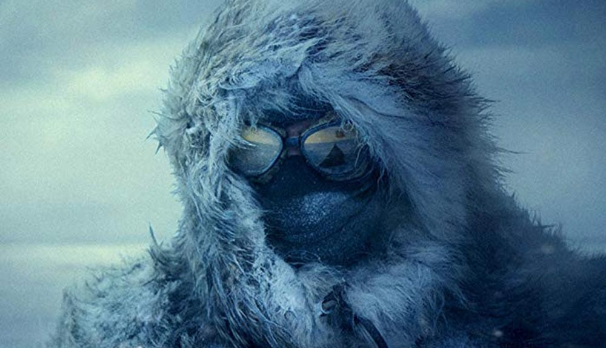

- Título: Amazing Grace
- Género: Documental
- Duración: 89 min
- País: Estados Unidos
- Director: Sydney Pollack, Alan Elliot
Sinopsis:
En 1972, Aretha Franklin grabó su disco Amazing Grace en una iglesia en el sur de Los Ángeles. El cineasta Sydney Pollack estuvo allí para inmortalizarlo. El material grabado nunca vió la luz. Hasta ahora.
Reparto:
- Syney Pollack
- Mick Jagger
- Clara Ward
- Clarence LeVaughn
- Charlie Whatts
- Chuck Rainey
- Bernard Purdie
- Alexander Hamilton
- Cornell Dupree

- Título: Amundsen
- Género: Biopic
- Duración: 125 min
- País: Noruega
- Director: Espen Sandberg
Sinopsis:
Vida del legendario explorador noruego Roald Amundsen, un hombre que estuvo obsesionado con alcanzar las cimas polares. Esta película retrata Roald Amundsen como un hombre implacable y eficaz, obsesionado por su carrera contra el equipo de Robert Falcon Scott y el imperio Británico en general, por llegar al Polo Sur.
Reparto:
- Pal Sverre
- Christian Rubeck
- Katherine Waterston
- Fridtjov Saheim
- Mads Sjogard Pettersen
- Ole Christoffer Ertvag
- Jonas Strand
- Eirik Evjen
- Glenn Andre Kaada
- Ted Otis